Введение
Для чего нужно знать интернет в наше время? Умение пользоваться ПК (персональным компьютером) в наше время умение пользоваться персональным компьютером и сетью интернет очень важно сейчас можно решить любой вопрос при помаши интернета и с помощью персонального компьютера. Компьютер можно использовать и не только для решения проблем, а также для развлечения, и для просмотра фильмов или каких-либо новостей. И если вас заинтересовал компьютер и интернет предлагаем пройти обучение на нашем сайте.
1 ГЛАВА «Устройство компьютера»
Первое, что необходимо понять приступив к обучению:
Компьютер – ваш помощник. Не бойтесь его! Он готов к тому, что вы случайно можете нажать «не туда». Будьте уверены, на качестве его работы — это не как не отобразиться.
Зачем нужен компьютер
С помощью компьютера можно:
• Работать с текстом (набирать, редактировать, сохранять его в памяти компьютера, выводить на бумагу).
• Выходить в международную сеть Интернет.
• Получать государственные услуги: запись в поликлинику, оформление загранпаспорта и другие.
• Передавать показания коммунальных счетчиков (газ, электричество).
• Находить нужную информацию: адреса, телефоны. Совершать покупки, оплачивать счета.
• Слушать музыку, смотреть фильмы (даже телевидение), играть и, конечно, общаться с родными и друзьями.
Из чего состоит компьютер:
• системный блок; (1)
• монитор (2)
• клавиатура (3)
• Мышь(4)
1)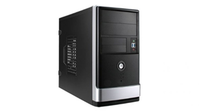
2)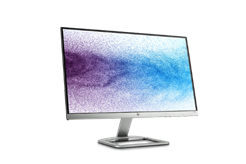
3)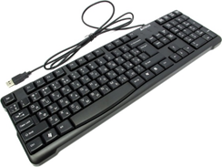
4)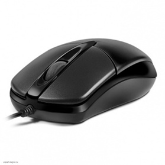
Компьютер – это, по сути, вычислительная машина. В основе его работы программа. Она переводит цифры на понятный нам язык – в слова, музыку, изображения. По принципам устройства компьютер – модель человека, работающего с информацией. У него есть «мозг» – системный блок 1.
Здесь находятся все устройства, обрабатывающие и передающие информацию.
• Именно в системном блоке хранится память компьютера. Но вы, работая на компьютере, смотрите на экран, он называется «монитор»
• Именно на мониторе вы можете увидеть, как компьютер выполнил ваши команды. Общайтесь с компьютером с помощью двух основных устройств: клавиатуры и мыши
• Клавиатура передает в компьютер буквы, цифры, команды клавиш.
• Мышь позволяет выделять и управлять различными объектами, которые вы видите на экране
Виды компьютеров:
Настольный стационарный компьютер (5)
Он состоит из системного блока, монитора, клавиатуры и мыши. У большинства людей дома имеются именно такие компьютеры.
• Переносной компьютер (ноутбук) (6)
Он намного компактнее по сравнению с настольным. На вид напоминает большую книжку. Его процессор размещен под клавиатурой.
Планшеты (7)
• Сегодня популярность набирают небольшие удобные компьютеры – планшеты. По сути это один экран. К нему нет клавиатуры и мыши. Управление происходит прикосновением пальцев
5) 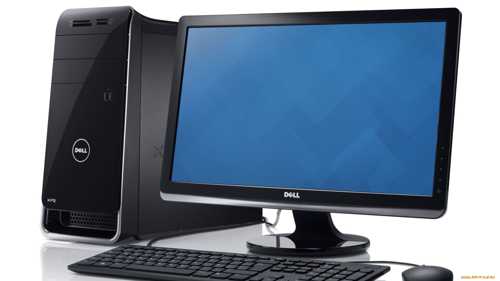 6) 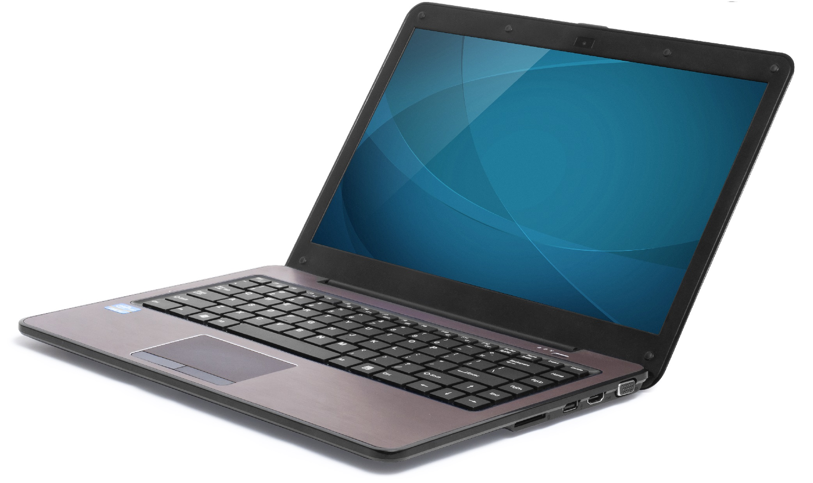 7) 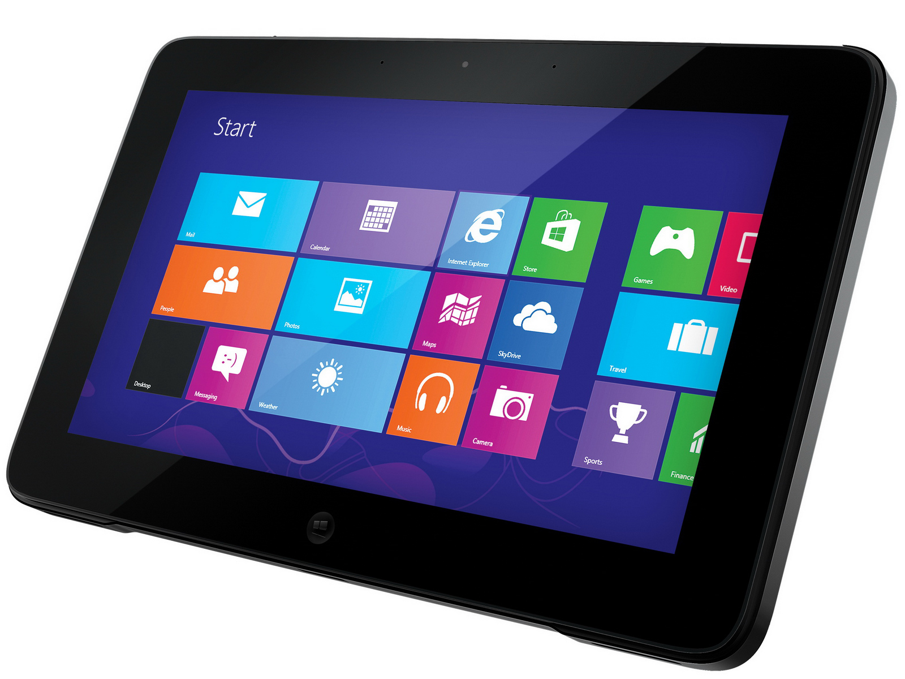
Значение основных клавиш
1) Клавиша ввода Enter 1. При нажатии на клавишу в текст вводится новая строка, а в некоторых случаях дается подтверждающая команда компьютеру. Значение этой клавиши можно перевести «Ввод».
2) Клавиша Escape 2 используется для отмены текущей операции или выхода из некоторых программ.
3) Клавиша пробела 3 нужна, чтобы ставить пробелы между словами. Клавиша пробела нужна, чтобы ставить пробелы между словами.
4) Клавиша Ctrl обычно используется в сочетании с другой клавишей. Удерживание клавиши Ctrl вместе с другой клавишей или несколькими клавишами выполняет какую-либо функцию.
5) Клавиша Alt похожа на клавишу Ctrl и также используется в комбинации с другими клавишами.
6) Клавиши со стрелками отвечают за движение курсора по тексту или объекту.
7) Клавиша Shift используется в основном для набора заглавных букв. Удерживая клавишу Shift, можно также вводить знаки и символы, изображенные над цифрами на цифровых клавишах.
8) Клавиша Caps Lock При одном нажатии все буквенные клавиши будут работать в режиме набора заглавных букв. Чтобы отключить Caps Lock, нажмите эту клавишу еще раз.
9) Клавиша Tab задает отступ для абзацев вправо.
10) Клавиша Backspace удаляет символ непосредственно слева от курсора.
11) Клавиша Delete удаляет символ непосредственно справа от курсора.
Сочетания клавиш:
• Ctrl + C – копирование выделенного фрагмента.
• Ctrl + V – вставка скопированного фрагмента.
• Ctrl + Z – отмена последнего действия.
• Ctrl + A – выделение всего.
Выбор языка
Вы всегда можете переключить язык с русского на английский, и наоборот. Два варианта: 1. Одновременно нажмите одну из комбинаций двух клавиш:
(L – Left -левый)
L.Alt + L.Shift
Wind + пробел
Внизу на нижней панели справа есть значок русского языка RU, если вы нажмете сочетание клавиш, значок должен измениться на EN, то есть английский. Вы всегда по нему можете определить, на каком языке сейчас будет печататься текст.
Кликните на кнопку справа на нижней панели рабочего стола RU или ENG в зависимости от выбранного языка. Чтобы сменить язык, щелкните левой кнопкой мыши напротив нужной строчки. Таким образом вы отметите нужный язык галочкой (8)
8)Windows 7  Windows 10 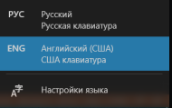
Windows 10 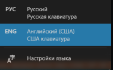
курсор
Курсор – это указатель. Передвигаете вы его по экрану мышью.
Как правило, он выглядит как маленькая стрелка.(1.0)
Таким он становится, когда вы наводите курсор на текст (1.1)
Такой курсор означает, что компьютер выполняет какую-либо операцию. (1.2)
(Просто подождите. Не давайте ему еще задания.)
Таким курсор становится, когда вы наводите его на ссылку, например,
в интернете.(1.3)
1.0) 1.1) 1.2) 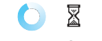 1.3)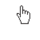
1.2) 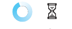 1.3)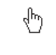
Как включить, выключить или перезагрузить компьютер
Чтобы включить компьютер, нажмите кнопку питания на системном блоке.(9)
На ноутбуке достаточно нажать одну кнопку. Она может находиться сбоку либо вверху над клавиатурой.(9)
Как выключить компьютер
1. Подведите курсор к кнопке «Пуск» (левый нижний угол на экране,) и нажмите на нее.(10)
2. В открывшемся окне выберите кнопку «Выключить компьютер» или «Завершение работы».(11)
3. На Windows 10 наведите на выключение и выберите действие которое хотите совершить (завершение работы,перезагрузка или спяший режим)
4. На Windows 7 наведите на стрелочку рядом с кнопкой выключение работы и выберите перезагрузка.
В различных версиях операционной системы Windows эта последовательность выключения или перезагрузки может быть разной,
но всегда через меню «Пуск».
Через какое-то время погаснет экран компьютера и лампочка
на системном блоке.
Бывает, что компьютер 5 – 10 минут не отвечает на ваши команды.
Очень вероятно, что он завис. Чтобы выключить его принудительно,
зажмите кнопку питания на передней панели системного блока
или кнопку включения на ноутбуке и держите более 5 секунд (пока
компьютер не выключится). Используйте принудительное выключение только в крайних случаях!
9) 10) 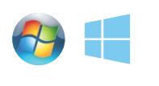
11)(Windows 7 'завершение работы') 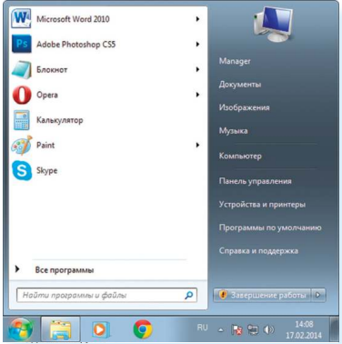
11.1)(Windows 7 'перезагрузка') 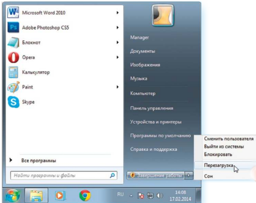
12)(Windows 10) 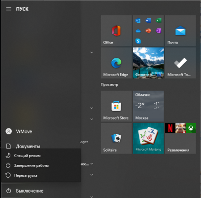